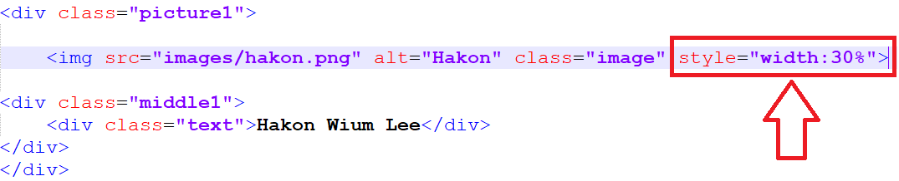

Cascading Style Sheet or popularly known as CSS.
- Cascading - refers to the ability to combine multiple CSS files to style a webpage.
- Style Sheet - controls the design of the web documents.
- CSS is a design language which enables you to specify rules on how a document written in markup language.(e.g., HTML, plain XML, XHTML etc.) should appear.
- CSS controls the presentation layer of the webpages.
Note:If you want to learn CSS, you should already have a knowledge about HTML.
Cascading Style Sheet were first proposed by Hakon Wium Lee, a Chief Technical Officer working at CERN with Tim Berners-Lee.
Hakon Lie released the first draft of "Cascading HTML Style Sheet" in 1994 at the same time Brent Bos was also building a browser that has style sheet that could be used by other markup languages(eg. HTML, VHTML, etc.).

Hakon Wium Lee

Brent Bos
- CSS allows you to apply specific styles to specific HTML element.
- It separates the content of the document and the details of the style.
- It improves website presentation.
- Saves you a lot of time in designing your website.
- Avoids duplication and Easier to maintain.
- CSS Level 1 (CSS 1, W3C Recommendation, December 17, 1996).
- The first official W3C Recommendation for CSS specification.
- Font properties
- Text attributes
- Margin, Boarders, Padding and Positioning
- Unique identification and classification of attributes.
- The first official W3C Recommendation for CSS specification.
- CSS Level 2 (CSS 2, W3C Recommendation, May 1998).
- A simple visual formatting model for HTML tags.
- Z-index
- Media Types
- Bidirectional Text
- Positioning - Fixed, Absolute and Relative.
- Supports aural style sheets.
- A simple visual formatting model for HTML tags.
- CSS Level 2.1 Revision 1 (CSS 2.1, W3C Recommendation, June 2011).
- Allows users and authors to separate the content and the presentation style of the documents.
- CSS Level 3
- Modular approach to CSS development(as opposed to the monolithic specification of CSS 2.1)
- Selector level 3
- Media Queries
- NameSpaces
- Modular approach to CSS development(as opposed to the monolithic specification of CSS 2.1)
Note: CSS Level 1 is already removed.
There are three ways to apply CSS styles to a HTML document. They are:
- Inline style
- Directly applied to the HTML using the style attribute.
Example: 
- Embedded (a.k.a Internal) stylesheets
- Specified within the head tags of HTML document.
Example: Result 

- External (a.k.a linked) stylesheets (recommended)
-
☞These stylesheet doesn't contain any html tags and it should be saved with the .css extension.
Example: Source Code 

Note: Use Inline Style only when a SINGLE element has a unique style to be applied.
In CSS the browser interprets the style rules and then applies it to the corresponding elements in your website.
A style rule has two parts: selector and declaration.
- Selector - used to select the HTML element to style.
- Declaration Block - contains one or more declaration that has a property and value which is separated by a colon(:).
- Property - an attribute of HTML tag to be changed.
- Value - assigned to properties.

A declaration block always ends with a semicolon(;), and a declaration groups are surrounded by curly braces({}).
Comments are used to explain your code. A CSS comment starts with "/*" and ends with "*/".
| Single Line Comment | Multiple Line Comment |
|---|---|
 |
 |
- Selector - is an HTML tag wherein it is used in CSS rule to determine which style will be applied.
- Type Selectors or Element Selector - The most easy to understand selector. . It will select all matched elements in the document.
Syntax Type Selector 

- Grouped Selector - Elements with the same style are combined into one declaration block wherein selectors are separated with a comma.
Example Grouped Selector 

- ID selectors
- Class selectors
- Universal selectors
- Attribute selectors
- [attribute=value] - Selects all elements with target="_blank"
- [attribute~=value] - Selects all elements with a title attribute containing the value you put inside the attribute.
- [attribute !=value] - Select elements that either don't have the specified attribute.
- Pseudo-classes - a keyword added to the end of a selector, which is used to specify the element you want to style.
- Dynamic pseudo-classes ( e.g., :link , :visited )
- User-action pseudo-classes ( e.g., :hover , :active , :focus )
- Target pseudo-classes ( e.g., :target )
- Language pseudo-classes ( e.g., :lang )
- UI element states pseudo-classes ( e.g., :enabled , :disabled , :checked , :indeterminate )
- Structural pseudo-classes ( e.g., :root , :first-child , :last-child , :only-child , :nth-child(), :nth-last-child() , :first-of-type , :last-of-type , :only-of-type , :empty , :nth-of-type() , :nth-last-of-type() )
- Pseudo-elements ( e.g., :first-letter , ::first-letter , :before , ::before )
- Combinators
- Descendant combinator ( i.e., whitespace , space , tab , line feed , carriage , return , form feed )
- Child combinator (>)
- Sibling combinator
- Type Selectors or Element Selector - The most easy to understand selector. . It will select all matched elements in the document.
- CSS Rule Precedence - From highest to lowest priority and an HTML element may be the subject of the selectors of multiple style rules.
▹ when such rules target different properties, their effects cascade (i.e., are combined )
▹ when the styles involve the same property, they conflict and must be resolved such that only one style is applied.- By origin and importance
▹user agent important declarations
▹user importance declarations
▹author important declarations
▹author normal declarations
▹user normal declarations
▹user agent normal declarations - By specificity- The higher the priority
▹Inline Style
▹Number of ID selectors
▹Number of class selectors, attribute selectors, pseudo-class
▹Number of type selectors & pseudo-elements - By order - If it comes later, it goes first.
- By origin and importance
- At-rules - used in CSS to convey metadata, descriptive information or other conditional information. It starts with "@" sign followed by an identifier(rule) then a syntax block, ending with a ";" semicolon.
- Metadata
- @charset
- @import
- Descriptive Information
- @font-face
- Conditional Information
- @media
- @document
INSERT SOME EXAMPLE HERE.
- Metadata
- Nested Statements - a subset of at-rule.
- @media - The device which runs the browser matches the expressed condition.
- @supports - The browser supports the tested feature.
- @document - Content page matches some of the conditions.
INSERT SOME EXAMPLE HERE.
- Shorthand Properties
- allows authors set several property value in a single line (e.g., border-width)
- vendor specific extensions (a.k.a. vendor prefixes)
- used by browser vendors as a prefix for the names of experimental or non-standard CSS properties. (e.g., -webkit- , -moz- , -o- , -ms-)
- custom properties a.k.a, CSS variables (experimental). Property names prefixed with "- -", representing a value.
- keywords
- numbers(integers & reals indecimal notation)
- value processing
▹ declared, cascade, specified, computed, used, actual values.
▹ Value types - Keywords (CSS wide keywords (e.g., initial , inherit, unset) , property-specific keywords) - dimensions
▹length, angle, duration, frequency, resolution - length units:
▹font relative: em, ex, ch, rem
▹viewport precentage: vw, vh, vmin, vmax - absolute lengths: cm, mm q, in, pt ,pc ,px
- angle units: deg, grad, rad, turn
▹ used in some gradient and transform functions - duration units: s, ms
▹ used in animation, transition, and related properties - frequency units: hz, khz
▹ usually introduced in CSS2 for the (obsoleted) aural media type: reintroduced in CSS3 but currently unused. - resolution units: dpi, dpem, dppx
- percentages
▹ number with a % suffix
▹ calculated as a percentage of some value (usually taken from the parent-element) - URLs and URIs
▹ URL() function with an absolute or relative (to the stylesheet) URL parameter
▹ denotes a pointer to a resource, such as an image or a font. - colors
▹ color keywords: red, blue, white, etc.
▹ RGB hexadecimal notation: #fff , #f00 , #f00f, etc.
▹ RGB functions: rgb(255,0,0) , HSL functions: hsl(0,100%,50%) or hsla (0,100%,50%,1), Currentcolor: transparent - strings
▹ delimited by single quotes (') or double qoutes(") - functions: calc(), attr(), counter(), counters(), linear-gradient(), radial-gradient(), translate(), scale(), rotate()
- provides functionality without having to write CSS.
- Set of codes already provided by other users which other developers can use in developing their website.
- allows users/developers to make use of the features of the browsers.
▹ E.g., modernizr, selectivizr, etc.